Noisy training inputs
The forward process.
Part A uses PixNerd-XXL, a pretrained text-to-image flow model. Time 0 is pure noise and time 1 is a clean image. Given a noisy image, the time and a text prompt, the model predicts a velocity: the direction the image should move to get cleaner. I ran everything on a Kaggle T4 GPU.
To make a noisy image I mix the clean image with Gaussian noise:
xt = (1 − t) ε + t x1, ε ~ N(0, I)
I sampled one noise tensor and reused it for all three times. My image is a burger, center-cropped and resized to 512 × 512.
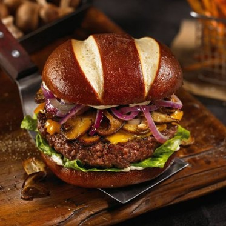
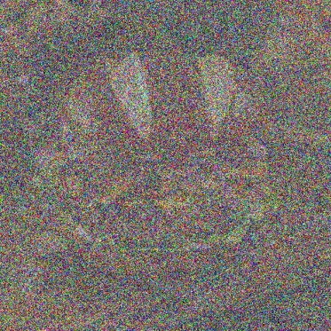
At t = 0.25 you can only make out the light stripes on the bun. By t = 0.75 most of the detail is there.
Classical denoising
Gaussian blur as a baseline.
Dividing by t fixes the brightness of the image part, xt / t = x1 + ((1 − t) / t) ε, but the noise is still there. Then I blur. I tried σ = 1, 2, 4, 8 and 16 and kept the one closest to the original (lowest MSE).
t = 0.25 · best σ = 8
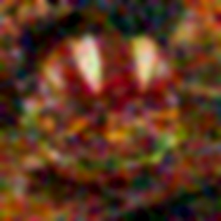
t = 0.50 · best σ = 4
t = 0.75 · best σ = 2
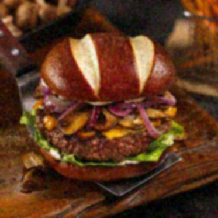
The best σ went down as t went up. Blur removes the noise but takes the detail with it. At t = 0.25 it's just colored blobs and the two bun stripes.
One-step denoising
One velocity prediction, then jump to t = 1.
The model predicts velocity, not noise. The path from noise to image is a straight line, so one step of size 1 − t lands at the end:
x̂1 = xt + (1 − t) vθ(xt, t, c)
c is the embedding of "a high quality photo".
t = 0.25
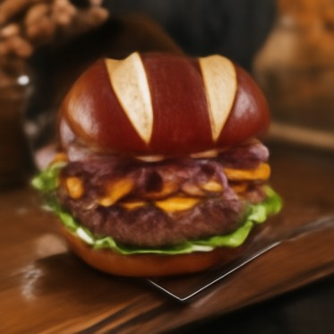
t = 0.50
t = 0.75
This is much better than blur. At t = 0.25 it's clearly a burger but smooth, and the onions and mushrooms are smudged. At t = 0.75 it's almost the original.
The model can't know the exact detail the noise covered up, so one step gives something like the average of all the clean images that could have produced this noisy input. With a lot of noise that average is blurry.
Visualizing velocity
What the model adds, next to what it should add.
The update that gets back to my image is x1 − xt, which is (1 − t) vgt with vgt = x1 − ε. The model's update is (1 − t) v̂. I show both on the same color scale with 0 at middle gray.
The error map is the RMS over RGB at each pixel, and brighter means more error. All three maps use the same color scale. At first the scale went from 0 to the largest error, 1.62, but only a few pixels were that bad, so the maps came out almost black. Now the top of the scale is the 99th percentile over all three maps, 0.42.
t = 0.25
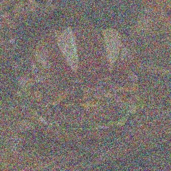
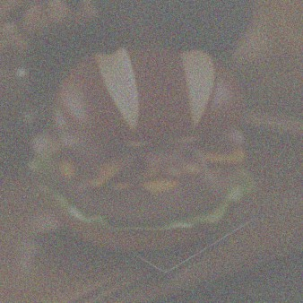
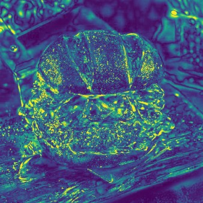
t = 0.50
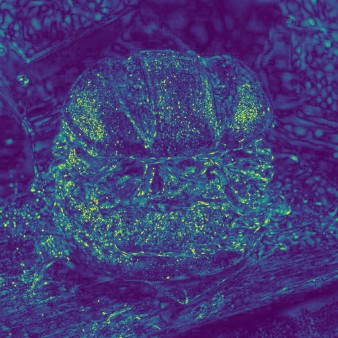
t = 0.75
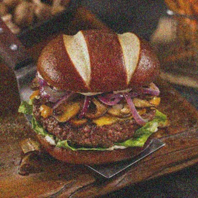
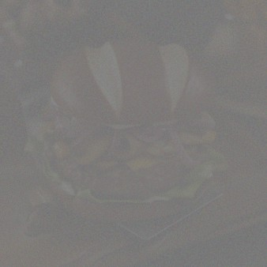
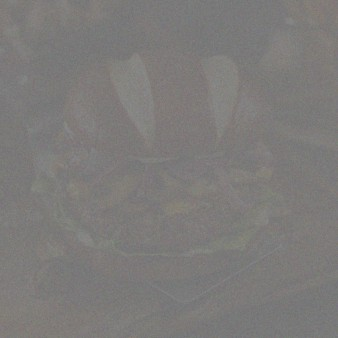
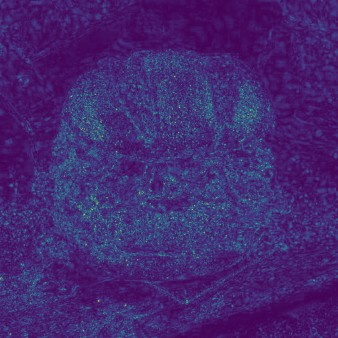
The two updates look almost the same. Their difference is x̂1 − x1, the one-step error, so the map shows where one step missed. The error is on edges and texture: the bun outline, the onions, the lettuce and the wood grain. At t = 0.25 even the dark background has some, since the model has to guess what was under the noise. The median error goes from 0.096 at t = 0.25 to 0.057 at 0.5 and 0.035 at 0.75.
Euler sampling
Lots of small steps instead of one big one.
xt+h = xt + h vθ(xt, t, c)
Starting from the t = 0.5 input, I take 25 steps of h = 0.02 and predict a new velocity at each one. If the steps don't divide 1 − t evenly, the last one is shorter so it ends at exactly t = 1. I tested this with a constant velocity of 1, where the result should be the start plus (1 − tstart).

All three methods on the same t = 0.5 input:
| Method (from t = 0.5) | MSE to the original |
|---|---|
| Gaussian blur, σ = 4 | 0.0248 |
| One step | 0.0115 |
| Euler, 25 steps | 0.0142 |
Euler looks the sharpest. The patty and the wood grain have real texture, and the one-step result is smoother. But Euler has a higher MSE than one step. The one-step result is close to the average guess, which is what MSE rewards. Euler makes up sharp detail that looks right but doesn't match the original pixel for pixel.
Generating images from noise
Euler sampling from t = 0.
Same sampler, but starting from pure noise at t = 0 (50 steps) with "a high quality photo". Seeds 180 to 184.
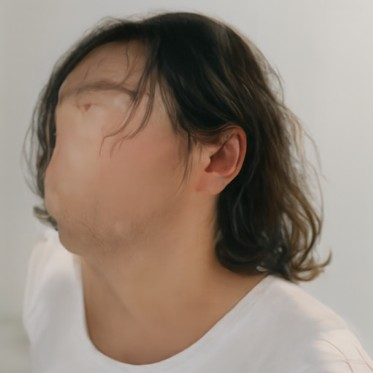
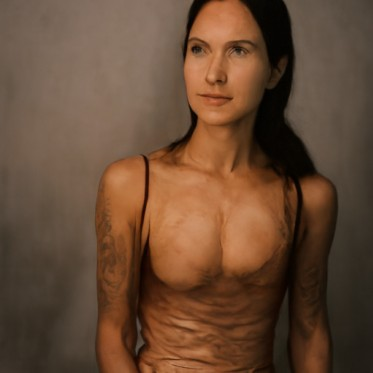
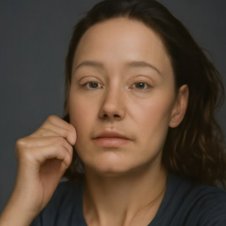
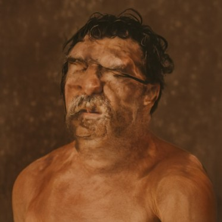
All five are portraits of people, so this prompt seems to lean toward people. Without guidance the quality is mixed. Seed 180 has no face, seed 183 looks melted, and seeds 182 and 184 are okay.
Classifier-free guidance
Pushing harder toward the prompt.
vcfg = vc + w (vc − vu)
vc uses the prompt and vu uses the empty prompt "", both at the same xt and t. I used w = 7 and h = 0.02. I checked that w = 0 gives the plain conditional prediction.
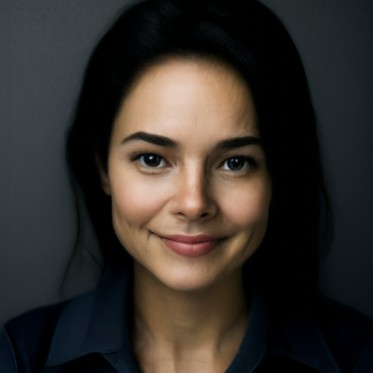
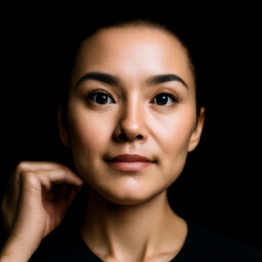
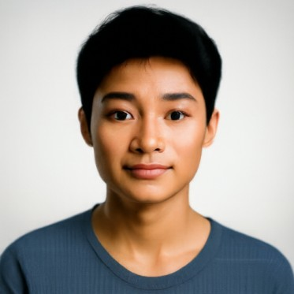
These use the same five noises as section 06. They're still all portraits, but now every face is clean and in focus. They're also more alike: front-facing headshots on plain backgrounds with studio lighting. So CFG gives better images and less variety.
The layout still comes from the noise. Seed 182 has a hand by the face both times.
Image-to-image editing
Add some noise, then let the model clean it up.
edit() noises the image to a starting time with the same noise (seed 180), then runs Euler with CFG from there to t = 1. A small starting time means more noise, so the model has to make up more and the edit is bigger. Prompt "a high quality photo", w = 7, h = 0.02.
Campanile
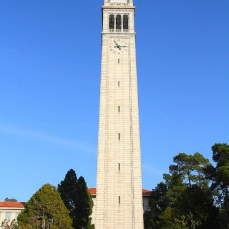
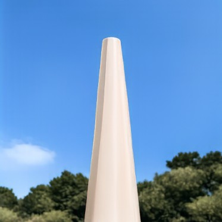
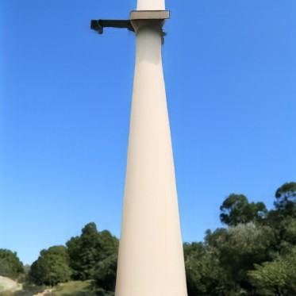
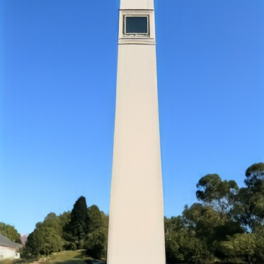
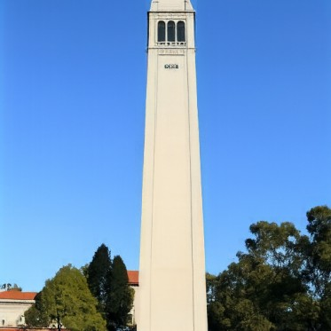
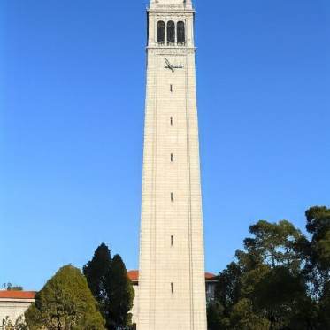
At 0.02 only a white post against blue sky is left. At 0.06 it's a plain tower with trees, at 0.10 the top has a window, and at 0.25 the belfry arches are back. At 0.5 the clock is back too.
My burger

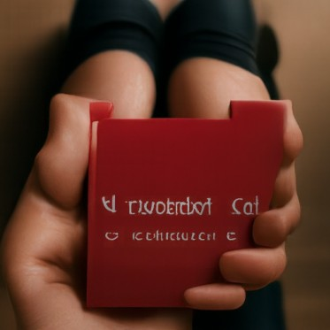
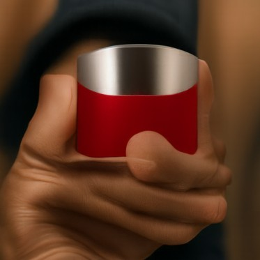
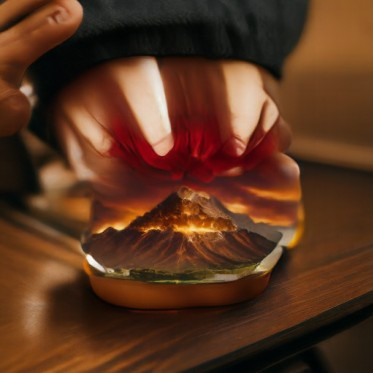
The low starting times keep the warm colors but not the burger: a woman at a desk, a hand holding a red box, a red cup. At 0.14 there's a volcano sitting on a bun. At 0.25 it's a burger again.
Me
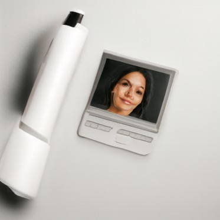
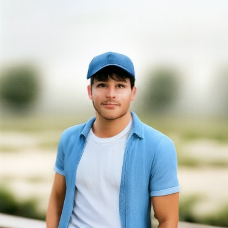
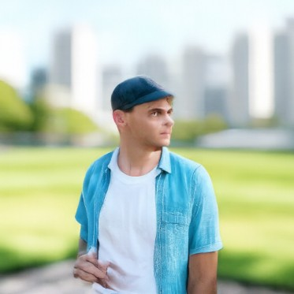
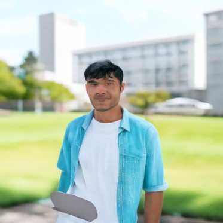
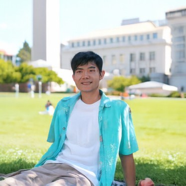
At 0.02 it's a white pen and a picture of a woman. From 0.04 to 0.10 it's a different guy in a blue cap, wearing a blue shirt over a white t-shirt like mine. At 0.14 the Campanile and the buildings come back, and by 0.25 it's me.
Hand-drawn and web images
This works well on images that aren't photos, since the model pulls them toward real photos. I used four images from the web and two drawings I made in a browser sketch pad.
Koi painting (web)
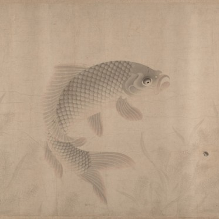
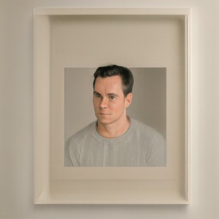
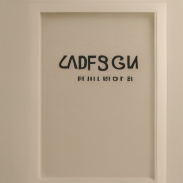
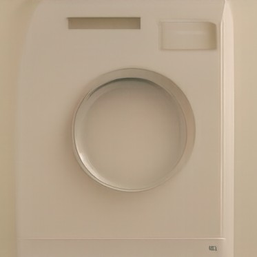
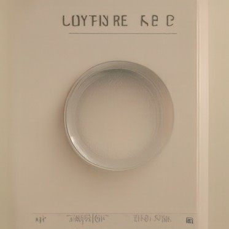
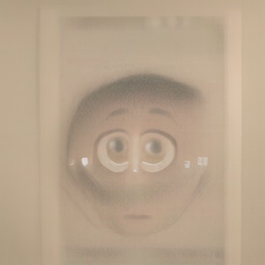
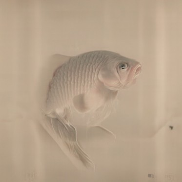
The model doesn't see the faint fish until t = 0.5. Before that it turns the beige background into other things: a portrait at 0.02, a framed photo at 0.04, a sign at 0.06 and a washing machine door at 0.10 and 0.14. At 0.25 the round shape becomes a cartoon face.
Cat (web)
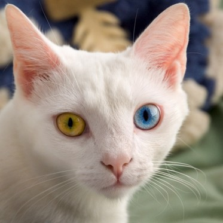
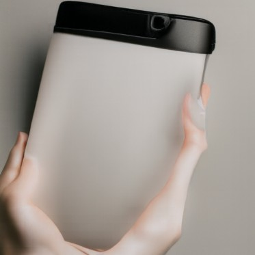
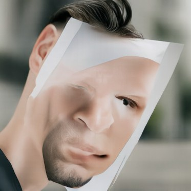
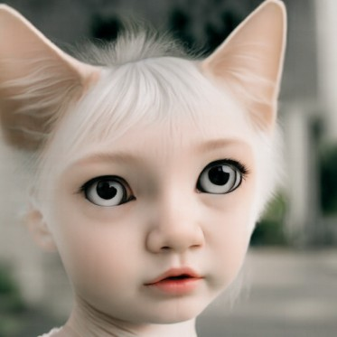
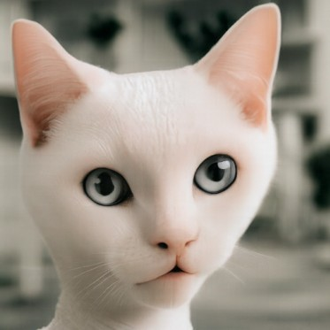
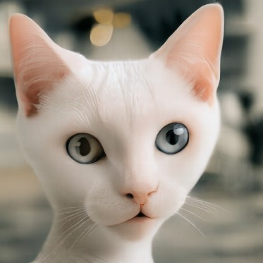
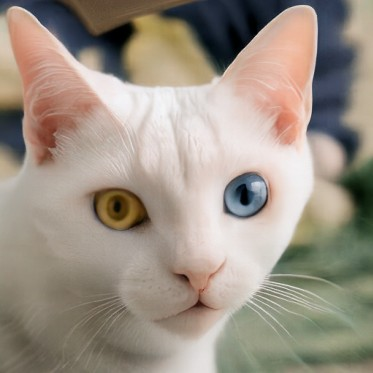
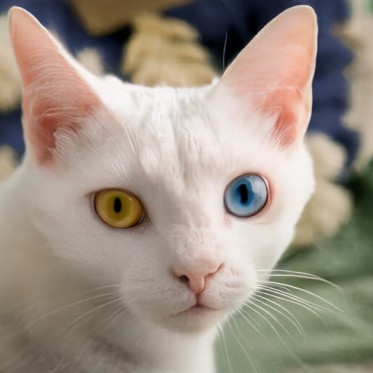
At 0.02 it's hands holding a white tablet, and at 0.04 it's a man holding a paper face over his own. At 0.06 it's a little girl with white hair and cat ears. At 0.10 and 0.14 it's a white cat again, but both eyes are gray. The yellow and blue eyes only come back at 0.25.
Golden Gate Bridge (web)
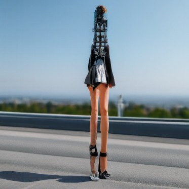
At 0.02 it's someone at a desk. At 0.04 the tower turns into a woman with very long legs standing on a road, and at 0.06 it's a tall wooden clothespin by a road. From 0.10 on it's the bridge, but the fort in the corner is an armchair until 0.25.
VW Beetle (web)
At 0.02 and 0.04 it's portraits again: a smiling woman, then a man behind a red card. At 0.06 it's a modern red sports car. At 0.10 and 0.14 it's an old red convertible with too many headlights. From 0.25 on it's the Beetle, but the license plate is scrambled.
Almost every image turns into a portrait or a product photo at 0.02 and 0.04. With that much noise only the rough colors are left, so the model falls back on the kinds of photos it makes most. That matches section 06, where pure noise always gave portraits.
My frog drawing
At the low starting times the green lines are ignored and it makes white product photos: a metal box, a carton, some round parts. At 0.10 it's a different, shaded frog drawing, and from 0.25 on it's my frog.
My bunny drawing
It stays black and white, but from 0.02 to 0.06 it turns into gadgets: a laptop, then a machine with knobs, then a bunny-shaped gadget with knobs for eyes. At 0.10 and 0.14 it's my bunny with shiny black ears. By 0.25 it's my drawing.
Both drawings turned into product photos on white backgrounds at first. I think that's the kind of real photo closest to a white page with a few lines on it.
Text-guided editing
Same edit, but the prompt describes the change.
Same procedure and starting times as section 08, with my own prompt for each image.
Campanile → "a photograph of a pencil"
The tower is already shaped like a pencil, so the pencil takes its place. From 0.02 to 0.06 it's a pencil standing in front of sky and trees. At 0.10 the pencil tip sits on top of the tower, and at 0.14 the tower top is back but the body still looks like wood. At 0.25 it's the Campanile.
Burger → "a photograph of a fish"
From 0.02 to 0.06 it's just a fish. At 0.10 and 0.14 the fish has the bun's white stripes and colors, and at 0.25 it's a fish shaped like a burger with the lettuce for lips. At 0.5 it's a burger.
Me → "a photograph of a dragon"
The low starting times give a dragon. From 0.04 on it's blue like my shirt, and the campus background shows up at 0.10. At 0.14 the dragon is wearing my shirt. At 0.25 it's me again, but with dragon scales on my legs.
More web images
For variety I tried two prompts on each of the three web photos from section 08 and kept the one I liked better.
Cat → "a photograph of an owl"
The owl gets the cat's pointy ears as ear tufts. At 0.25 it's half and half: cat ears and fur, owl feathers and a beak, and the cat's yellow and blue eyes. At 0.5 it's the cat, but its nose looks like a small beak. I also tried a polar bear, but the owl blended better.
Golden Gate Bridge → "a photograph of a roller coaster"
At 0.02 it's a loop full of riders. From 0.04 to 0.14 the road deck is a coaster train full of people, and at 0.10 and 0.14 the tower top is a coaster arch. At 0.25 it's the bridge, but the cables are coaster track. I also tried "a photograph of a harp", since the cables look like strings, and at 0.25 that one gave a wooden deck with strings.
VW Beetle → "a photograph of a strawberry"
From 0.02 to 0.10 it's a strawberry. At 0.14 it's a strawberry with a car wheel, and at 0.25 it's the Beetle with strawberry seeds all over the paint. The obvious prompt was a ladybug, and that worked too, but the strawberry blended better.
Visual anagrams
One image, two prompts, upside down.
At each step I get the CFG velocity for the first prompt on xt, and for the second prompt on xt rotated 180°. I rotate the second one back and average them:
v = ( vcfg(xt, t, p1) + flip(vcfg(flip(xt), t, p2)) ) / 2
Dog and fruit (seed 180). Upright it's a dog with fruit in front of it. Upside down the dog's dark head becomes the bowl.
Old woman and vase (seed 191). Upright it's an old woman in a shawl with flowers below her. Upside down her white hair and shawl are the vase and the flowers become the bouquet. Her face ends up as shading at the bottom of the vase.
Attempts that didn't work
Old woman and vase with seed 181: the flowers took over both ways. Sailboat and cat (watercolor, seed 191): it's a cat both ways and there's no sailboat. Seed 181 for the sailboat was the same.
Hybrid images
Low frequencies from one prompt, high frequencies from another.
v = lowpass(v1) + v2 − lowpass(v2)
Both are CFG velocities at the same xt and t. lowpass is a Gaussian blur with σ = 16 and kernel size 265. The first prompt is what you see from far away and the second is what you see up close.
Koi and waves (seed 180)
Far: "an ink painting of a koi fish". Close: "an ink painting of ocean waves".
Up close it's orange waves with white foam. From far away the orange shape is a koi.
Panda and bamboo (seed 181)
Far: "a lithograph of a panda's face". Close: "a lithograph of a bamboo forest".
Up close it's a forest of palms and bamboo. From far away the trees in the top corners are the ears, the two in the middle are the eye patches and the small one under them is the nose.
Attempts that didn't work
With "a lithograph of a panda" (seeds 191 and 201) there was no panda from far away, just a clump of trees. Asking for the panda's face worked better. I think that's because a face fills the whole frame.